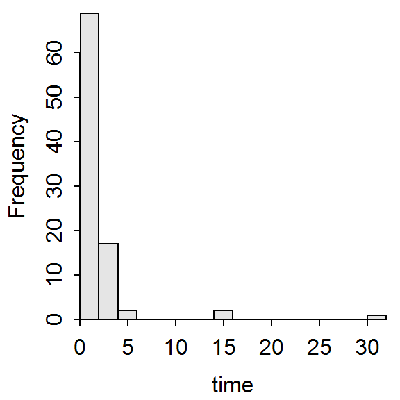
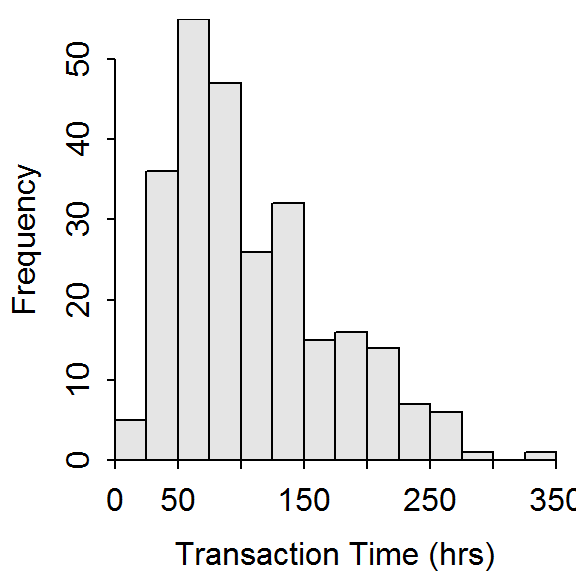

Time Spent Playing Video Games

For a class project, a student asked 91 students how much time they had spent playing video games in the last two days. Use the results in the figure and table below to construct a univariate EDA for these data.

n mean sd min Q1 median Q3 max percZero
91.0 1.2 3.8 0.0 0.0 0.0 1.2 30.0 62.6
See answer here
Bank Transaction Times

Cunningham and Heathcote (1989) recorded the total transaction time (in hours) for a large number of transactions at a branch office of a large Australian bank. Describe the distribution of these data from the results shown below.

n mean sd min Q1 median Q3 max
261.0 110.1 62.9 8.1 60.3 93.0 145.2 345.7
See answer here
Creatine Phosphate Concentrations

The table below contains the concentrations (International Units per liter) of creatine phosphokinase (an enzyme related to muscle and brain functions) in 36 male volunteers. Construct a proper EDA for these data. [HINT: Create and then load data from a CSV file.]
121 82 100 151 68 58 95 145 64
119 104 110 113 118 203 62 83 67
201 101 163 84 57 139 60 78 94
93 92 110 25 123 70 48 95 42
See answer here
Air Pollution

The table below contains the carbon monoxide levels (ppm) arising from one of the stacks for an oil refinery northeast of San Francisco between April 16 and May 16, 1993. The measurements were submitted as evidence for establishing a baseline to the Bay Area Air Quality Management District (BAAQMD). Construct a proper EDA for these data. [HINT: Create and then load data from a CSV file.]
30 30 34 36 37 38 40 42 43 43 45
52 55 58 58 58 59 63 63 71 75 85
86 86 99 102 102 141 153 261 21
See answer here
Dow Jones

The Dow Jones Travel Index tracks the cost of hotel and car-rental rates in 20 major cities. For its May 7, 1996, survey the rates below were given for the 20 cities. Thoroughly describe the distribution of these data. [Note: You can use fewer than the ideal number of bars on your histogram because the sample size is so small in this situation.]
152 180 167 119 115 113 119 135 127 161
140 126 114 133 205 104 149 124 106 179
See answer here
Zoo Sizes

The data in contains the physical size (in acres) of a sample of zoos from around the United States. Perform a univariate EDA on the “size” variable.
See answer here